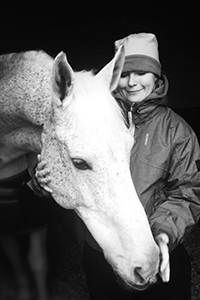

Jag är en ny student på Linnéuniversitetet i Kalmar, närmare bestämt på programmet Webbprogrammerare. På den här sidan ska jag berätta lite mer om mig själv.
Jag driver en enskild firma som heter Ajdoo där jag tar på mig mindre uppdrag (logotyper/webbplatser i Wordpress m.m.) vid förfrågningar och i mån av tid.
Jag har alldeles för många intressen, men jag kan ju lista de största.
Pappa Ulf och lillasyster Camilla. Båda jobbar i Camillas företag CaLi AB
Jag har gått Medieprogrammet med inriktning information och reklam på gymnasiet. Efter det har jag gått en KY-utbildning i Visuell kommunikation och projektledning.
Jag har jobbat med allt möjligt genom åren. Jag har varit t.ex. rallare, butikssäljare, ridinstruktör, grafisk formgivare, marknadskoordinator och webbutvecklare.
Jag har väldigt lite erfarenhet av programmering. Jag är en designer som har halkat in på att bygga hemsidor, mestadels i Wordpress, och började på så sätt intressera mig för PHP och JS.
Det här är tredje året jag söker, men första året jag även sökt in till campus. Jag har hört så mycket gott om utbildningen och lärarna och dessutom tycker jag universitetet känns modernt och jag tycker mycket bra om den entreprenöriella och internationella profilen.
Mitt mål är att ha ett roligt och stimulerande jobb som tillåter att jag kan spendera mycket tid utomlands. Att tjäna okej pengar är ett plus.